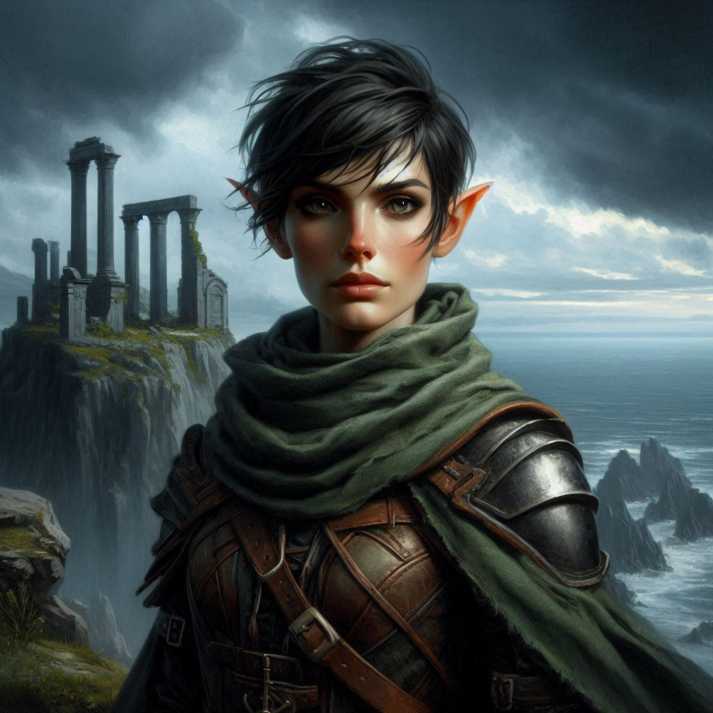
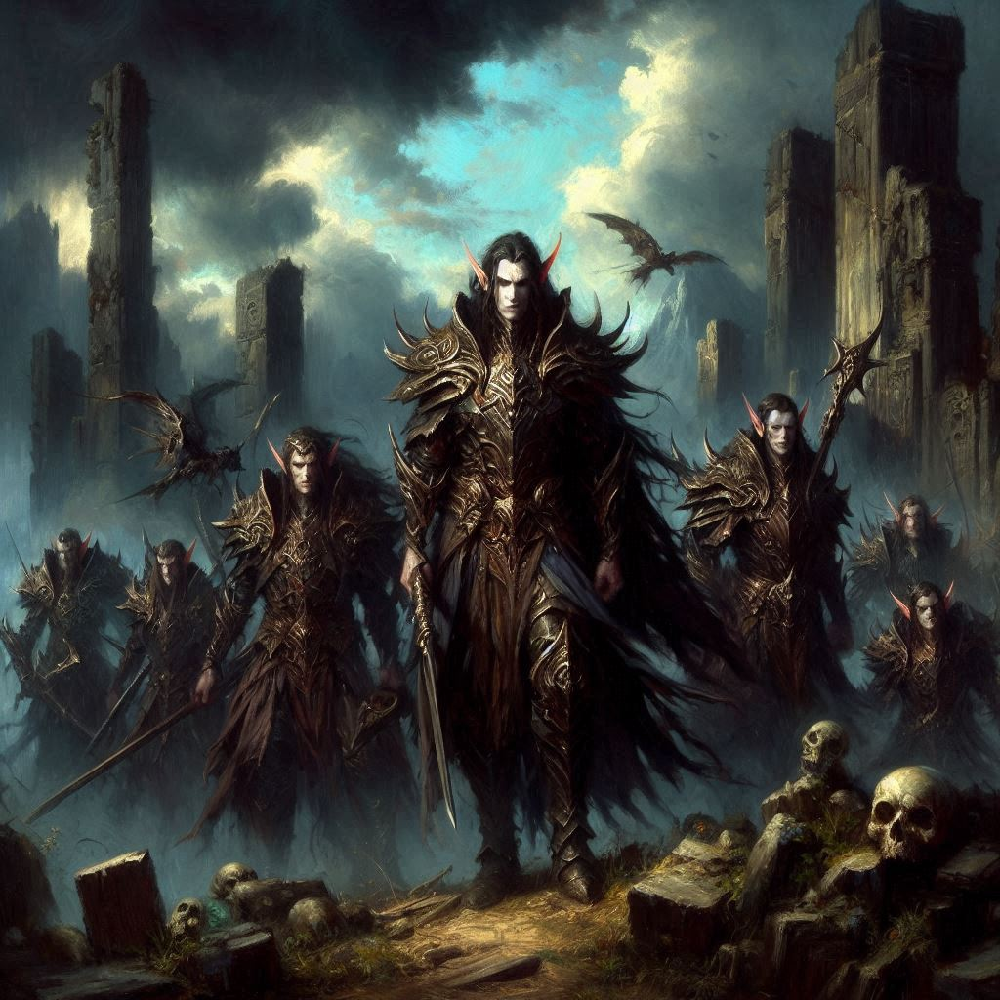

The Dark Realm
Something isn't right… One minute you were lunging for a black crystal to thwart the plans of the evil Minister of Trade, and the next minute…
You stand in the shadows of an ancient, twisted forest, the air thick with an otherworldly chill. The fragments of an ancient civilization rise from the undergrowth as monuments to a fallen society. The dark realm of the elves surrounds you—an oppressive, dimly lit place where the sky seems perpetually cloaked in storm clouds, rumbling with distant thunder. Black trees with silver leaves stretch high above you, their branches twisted into unnatural shapes. It’s a realm unlike any you’ve ever seen, one born from the magic of Hemlock Caverns.
You and Elias exchange a glance, both of you still reeling from the sudden transportation after touching the black crystal. The weight of the situation presses down on your shoulders. You’d known the risks, but nothing could have prepared you for this—a realm where time and space seem to shift, where danger lurks behind every shadow.
“I’ve never teleported before,” you say, your stomach churning. “I think I’m going to be sick.”
“Same.” Elias tries to focus his eyes. “This place,” he mutters, his voice tight with tension, “it feels wrong.”
You nod, gripping the hilt of your sword tighter. The path before you leads deeper into the forest, but every instinct is screaming at you to turn back—though you know there’s no going back, not now. The black crystal had brought you here for a reason, and as you glance at the ominous stormy sea in the distance, you feel the weight of dark magic all around.
“Jorsh... the Minister of Trade... they’re tied to this somehow,” you say, piecing it together as you try to steady your nerves. “The dark elves—they’re the key to unlocking the ancient magic of Hemlock Caverns.”
Elias looks at you, concern etched across his face. “We have to find a way out of here, Kira. We can’t fight our way through an entire realm of dark elves.”
Your heart races, not from fear alone, but from the pressure of leadership. You’ve grown to rely on your skills as a ranger to get through tough situations, but now... now you’re responsible for more than just yourself. You’re responsible for Elias, for your mission, and for figuring out how Jorsh fits into all of this. It’s a lot, and for a moment, you feel the weight of it pushing you down.
As you move deeper into the dark realm, the forest thins out, revealing a cliffside with a crumbling ancient temple. The temple’s silhouette looms against the dark clouds, overlooking a tumultuous sea below. It’s a place of power—you can feel it humming in the air—but it’s also a dead end.
Suddenly, a rustling sound cuts through the air. You freeze. From the shadows of the forest, figures emerge—dark elves, their skin pale and their eyes gleaming with malice. They move swiftly and silently, surrounding you before you can react.
“There’s no way out,” Elias says under his breath, his voice low and urgent. His hand hovers near his sword.
You try to count the dark elves—there are at least a dozen, each armed with spears and bows, their movements precise and coordinated. They block the only path forward, and behind you is nothing but the cliff’s edge and the raging sea below.
“There has to be something we can do,” you whisper, your mind racing.
“Let me take the lead,” Elias says, his voice determined. “We’ll fight our way out. Together.”
But your heart is pounding as another thought strikes you—your heritage. You’ve never spoken of it, not even to Elias, but you are half-elf, descended from an ancient bloodline that connects you to these dark elves. You’ve heard stories of their language, a tongue older than any other, filled with magic and power. Could you use that connection to speak to them? To reason with them?
The dark elves close in, their weapons at the ready. You can feel the tension in the air, the anticipation of battle. But you know that if you fight, it will be to the death—yours or theirs.
Elias looks at you, waiting for your command. He trusts you, but you can see the uncertainty in his eyes. His protective instincts are screaming at him to fight, but he’s also looking to you for guidance.
You can feel your pulse racing, the weight of the decision pressing down on you. Do you trust your heritage and attempt to speak to the dark elves, hoping to negotiate your way out? Or do you follow Elias’ lead and prepare to fight to the last breath, knowing that it could be your only way to survive?